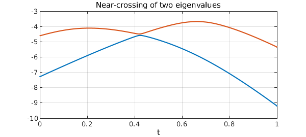
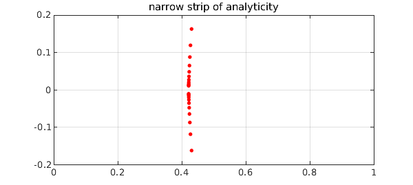
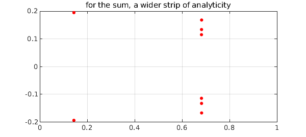

In the example "Eigenvalue Level Repulsion" of 2010, we considered morphing one real symmetric matrix into another,
$$ A(t) = (1-t)A + tB , \quad t \in [0, 1]. $$
Generically there will be no double eigenvalues for any $t$, though some may come close. Here are the bottom two eigenvalues from that example as functions of $t$:
rng(1), n = 10;
A = randn(n); A = A+A'; B = randn(n); B = B+B';
ek = @(e,k) e(k); % returns kth element of the vector e
eigA = @(A) sort(eig(A)); % returns sorted eigenvalues of the matrix A
eigk = @(A,k) ek(eigA(A),k); % returns kth eigenvalue of the matrix A
d = [0 1]; t = chebfun('t',d); E = chebfun;
for k = 1:n
E(:,k) = chebfun(@(t) eigk((1-t)*A+t*B,k),d);
end
E1 = E(:,1); E2 = E(:,2);
figure, plot([E1; E2]), grid on
title('Near-crossing of two eigenvalues');
xlabel('t')

Antoine Levitt of the École des Ponts has alerted me to a phenomenon that physicists know but numerical analysts may not be so well aware of. Numerical analysts know that eigenvalues of real symmetric matrices are well-conditioned, with condition number $1$ in the 2-norm. It's the eigenvectors, we are taught, that grow ill-behaved as two eigenvalues come close together.
But in fact, the eigenvalues misbehave too, even though they are analytic functions and even though their condition number, if that's all you look at, is irreproachable. One way to see this is simply to plot the derivatives of these two eigenvalue functions as a function of the parameter $t$:
plot(diff([E1; E2]))
title('derivatives of the eigenvalue functions')
Higher derivatives will be worse.
More interesting to fans of complex analysis is the behavior in the complex plane. Here we use AAA approximation to find a rational function that closely matches one of the eigenvalue functions. We plot poles as red dots, and this reveals that the region of analyticity around the real axis is very narrow. (The actual singularity is probably a square root branch point; the rational approximation introduces a string of poles along a branch cut.)
X = linspace(0,1,1000);
[r,pol] = aaa(E1,X);
plot(pol,'.r','markersize',12), grid on
axis([0 1 -.2 .2])
title('narrow strip of analyticity')

On the other hand Levitt points out that the sum of the two nearly-colliding eigenvalues will be much better behaved, a phenomenon that he and others exploit in computational physics. Here is that sum:
Esum = E1 + E2;
plot(Esum)
title('sum of the two eigenvalues')
And here are the poles of the AAA approximant:
[r,pol] = aaa(Esum(X),X);
plot(pol,'.r','markersize',14), grid on
axis([0 1 -.2 .2])
title('for the sum, a wider strip of analyticity')
